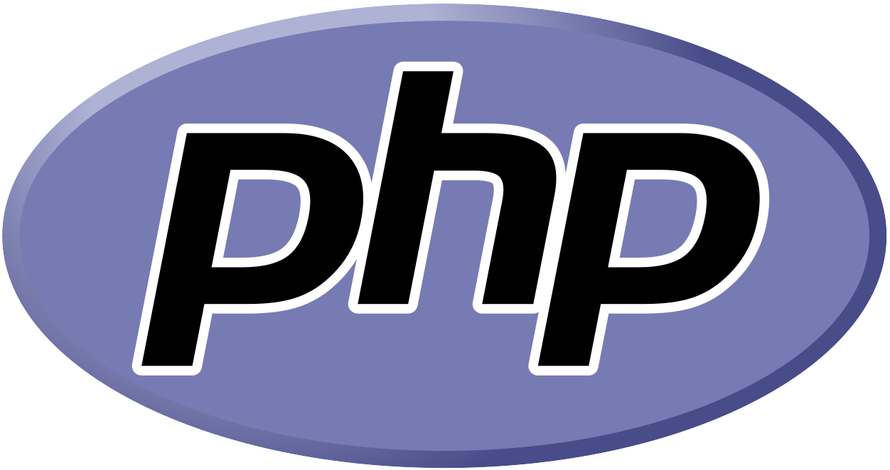
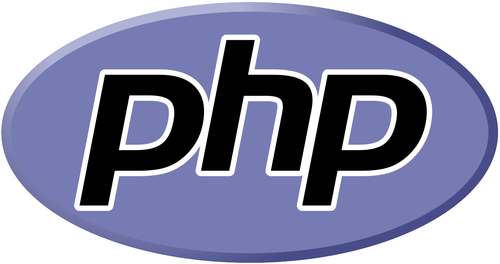
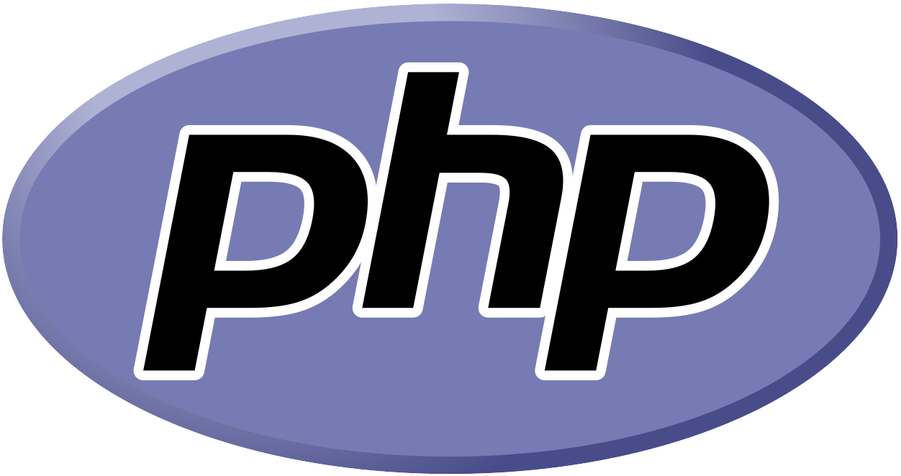

Habilidades:
 


Conocimientos generales de Informática, programacion en C++, programación en VB 6.0, HTML. Conocimientos en reparacion y mantenimiento de hardware y software. Redes.
Conocimientos generales de lógica de programacion, JavaScript, Ruby, POO, poliformismo, herencia, absstracción.
Analisis de emprendimientos, entrega y presentaciòn de proyectos, administración de recursos, analisis foda, planeación de proyectos
Curso de desarrollo básico en PHP, acceso a bases de datos MySQL, introducción a Frameworks
Frameworws como Laravel, diferentes librerías,nuevas tecnologías,Bootstrap, Vue, técnicas de programación, técnicas y metodologías de trabajo.
Conocimientos adquiridos en la universidad incluyen desarrollo web con HTML, CSS, JavaScript, PHP (con énfasis en Smarty) y MySQL con PDO. Además, experiencia en Java, uso de Git (GitHub, GitLab), Trello y Draw.io. También se exploraron conceptos básicos en redes.
Conocimientos en todos los componentes de las computadoras, tanto PC de escritorio, como Netbook,Notebook y All In One, armado de cables RJ45 y conexión y configuracion de redes, instalación de sistemas operativos y cualquier clase de software, recuperación de discos dañados, diagnostico de problemas fisicos y logicos de la pc, mantenimiento, reparacion y cambio de componentes y/o perifericos internos y externos
Curso básico de desarrollo en JavaScript, variables, tipos de datos, arrays, JSON, funciones, estructuras de control
